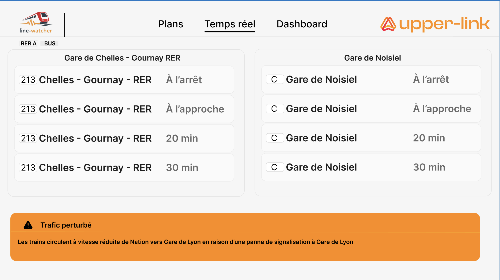

Création Figma — Line Watcher
Réalisation en entreprise — 04Contexte
Avant de démarrer le développement de l'application Line Watcher, une phase de conception UI/UX a été réalisée sur Figma. Cette étape permet de définir l'ergonomie, le design et les interactions de l'application avant d'écrire la moindre ligne de code. Line Watcher est un outil de monitoring des horaires du RER A développé chez Upper Link.
Objectifs
- Définir l'architecture des écrans de l'application
- Créer des maquettes basse et haute fidélité
- Prototyper les interactions utilisateur
- Établir un design system cohérent
- Servir de référence pour le développement frontend
Technologies utilisées
Figma
Design System
Prototype
Figma est un outil de design collaboratif en ligne permettant de créer des maquettes interactives.
Réalisations
- Maquettes des écrans principaux (accueil, horaires, paramètres)
- Prototype interactif navigable
- Définition des couleurs, typographies et composants
- Mise en place d'un design system réutilisable
Écrans conçus
- Page d'accueil avec affichage des prochains passages
- Vue détaillée par station
- Paramètres et configuration des lignes surveillées
- États de chargement et d'erreur
Compétences acquises
- Maîtrise de Figma (composants, auto-layout)
- Conception UX/UI centrée utilisateur
- Création d'un design system
- Communication entre design et développement
Aperçu — Maquette Line Watcher
